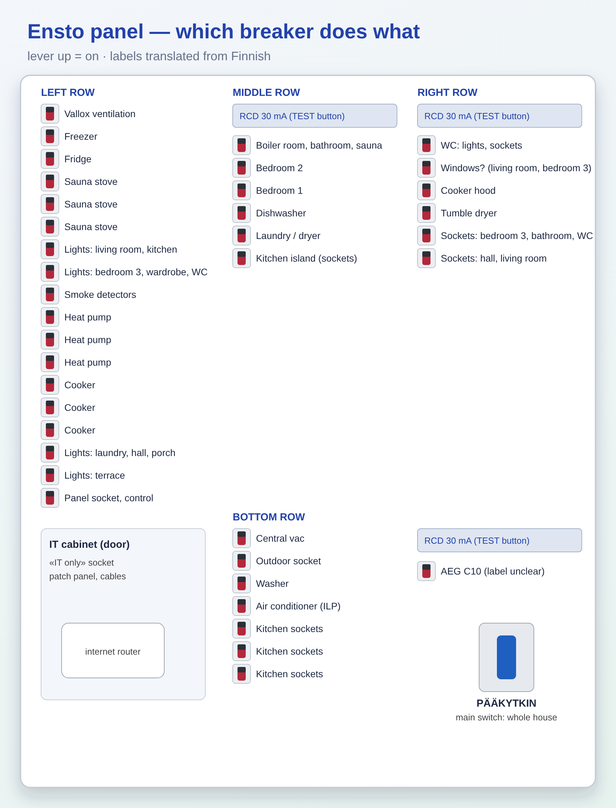

📍 где: Котельная › Котельная › Электрощит Ensto — какой автомат за что029
Щит Ensto ESBV345.36-IT, 50 А, 400 В — как пользоваться
Если пропал свет
1. Открыть щит в котельной, найти автомат с рычажком ВНИЗ.
2. Выключить/выдернуть прибор, из-за которого выбило.
3. Поднять рычажок вверх.
4. Если сразу выбивает снова — не держать силой, звать электрика (sähköasentaja).
• Если выбило широкое УЗО 30 mA — отключилась целая группа: выдернуть подозрительные приборы, поднять УЗО.
УЗО (30 mA) — проверка раз в полгода
• Нажать кнопку TEST на УЗО — рычажок должен упасть (OFF). Поднять обратно.
• Если при TEST не выключается — звать электрика.
Главный рубильник
• PÄÄKYTKIN (синяя ручка внизу справа) — обесточивает весь дом. Для ремонта электрики, при пожаре/затоплении.
Центральный пылесос · Наружная розетка · Стиральная машина · Кондиционер / воздушный тепловой насос (I.L.P.) · Розетки кухни ×3 · УЗО 30 mA · отдельно AEG C10 (подпись неразборчива)
Отсек IT
• За дверцей слева внизу: роутер/оптический терминал интернета и патч-панель.
• Интернет пропал — выдернуть питание роутера на 30 секунд и включить.
• Розетка с жёлтой наклейкой — только для сетевого оборудования (макс. 10 А).
Пересказ официальной инструкции для домашнего справочника. Источник: подписи на щите (переведены с финского) и памятка Ensto по УЗО
Ensto electrical panel — which breaker does what
Home electrical panel — breaker map · 📍 Where: Open box 029

If the power goes off
1. Open the panel in the boiler room and find the breaker with its lever DOWN.
2. Switch off/unplug the appliance that caused the trip.
3. Push the lever back up.
4. If it trips again immediately — do not force it, call an electrician (sähköasentaja).
• If a wide 30 mA RCD has tripped, a whole group has gone off: unplug suspect appliances, push the RCD back up.
RCD (30 mA) — test every six months
• Press the TEST button on the RCD — the lever must drop (OFF). Push it back up.
• If it does not switch off on TEST — call an electrician.
Main switch
• PÄÄKYTKIN (blue handle at bottom right) — cuts power to the whole house. For electrical repairs, in case of fire/flooding.
30 mA RCD, then: Lights and sockets for boiler room, bathroom, sauna · Bedroom 2 · Bedroom 1 · Dishwasher · Laundry room socket / dryer · Kitchen island sockets
Right row
30 mA RCD, then: WC (lights, sockets) · "Ikkuna…" (living room, bedroom 3) — label hard to read · Cooker hood · Tumble dryer · Sockets: bedroom 3, bathroom, WC · Sockets: entrance hall, living room
Bottom row
Central vacuum · Outdoor socket · Washing machine · Air conditioner / air-source heat pump (I.L.P.) · Kitchen sockets ×3 · 30 mA RCD · separate AEG C10 (label illegible)
IT compartment
• Behind the door at bottom left: internet router/optical terminal and patch panel.
• Internet gone — unplug the router's power for 30 seconds and plug it back in.
• The socket with the yellow sticker is only for network equipment (max. 10 A).
1. Avaa sähkökeskus teknisessä tilassa ja etsi johdonsuojakatkaisija, jonka vipu on ALHAALLA.
2. Sammuta/irrota laite, joka laukaisi katkaisijan.
3. Nosta vipu ylös.
4. Jos katkaisija laukeaa heti uudelleen — älä pidä sitä väkisin ylhäällä, vaan soita sähköasentajalle (sähköasentaja).
• Jos leveä 30 mA vikavirtasuojakytkin on lauennut, koko ryhmä on sammunut: irrota epäilyttävät laitteet ja nosta vikavirtasuojakytkin ylös.
Vikavirtasuojakytkin (30 mA) — testaus puolen vuoden välein
• Paina vikavirtasuojakytkimen TEST-painiketta — vivun pitää pudota alas (OFF). Nosta se takaisin ylös.
• Jos kytkin ei laukea TEST-painikkeesta — soita sähköasentajalle.
Pääkytkin
• PÄÄKYTKIN (sininen kahva oikealla alhaalla) katkaisee sähköt koko talosta. Sähkötöitä varten sekä tulipalon tai vesivahingon sattuessa.
Keskuspölynimuri · Ulkopistorasia · Pyykinpesukone · Ilmastointilaite / ilmalämpöpumppu (I.L.P.) · Keittiön pistorasiat ×3 · Vikavirtasuojakytkin 30 mA · erikseen AEG C10 (merkintä epäselvä)
IT-osasto
• Vasemmalla alhaalla luukun takana: internetin reititin/kuituliitäntärasia (valokuitupääte) ja kytkentäpaneeli.
• Jos internet katkeaa — irrota reitittimen virtajohto 30 sekunniksi ja kytke takaisin.
• Keltaisella tarralla merkitty pistorasia on vain verkkolaitteille (enint. 10 A).